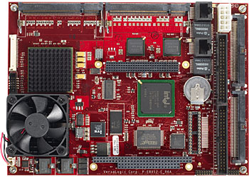

Computer
Cacic has onboard computer where the sofware run.

Computer Specs
- Pentium M 745 1.8 GHz
- RAM 1 GB DRR2
- HD 120 GB
- 2 RS232, one for robot’s microcontroller
- 2 USB
- Interface PC/104+
- WiFi
- Camera’s framegrabber
- VGA out
Connectors
The computer have a USB connector with pinout
USB pinout connector
| pin number |
data |
pin number |
data |
|---|
| 1 |
USB1 +5V |
6 |
USB2 Shield |
| 2 |
USB1 Data - |
7 |
USB2 Ground |
| 3 |
USB1 Data + |
8 |
USB2 Data + |
| 4 |
USB1 Ground |
9 |
USB2 Data - |
| 5 |
USB1 Shield |
10 |
USB2 +5V |